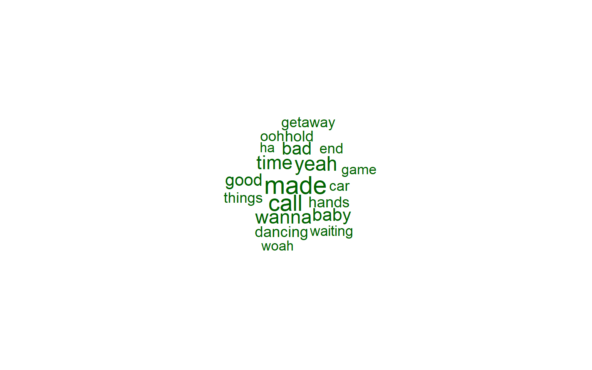
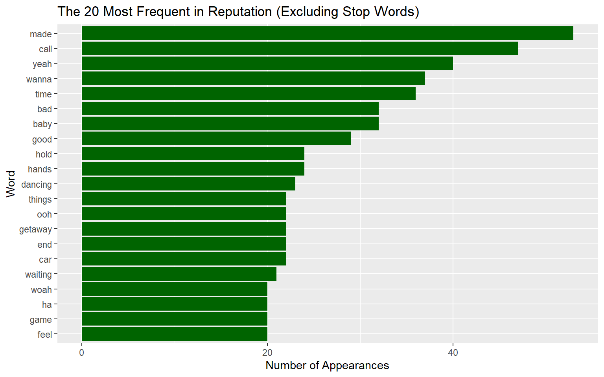
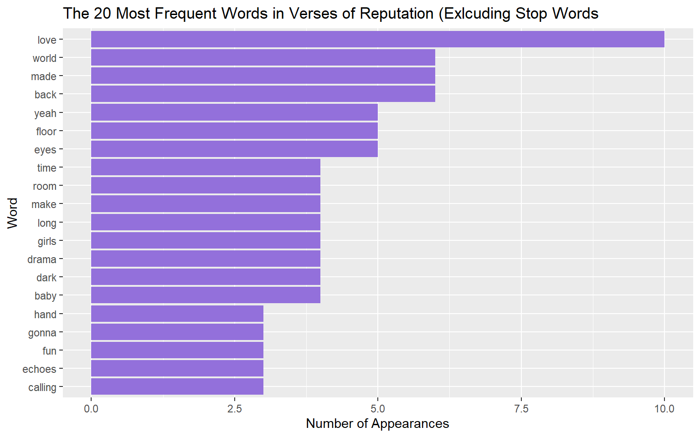
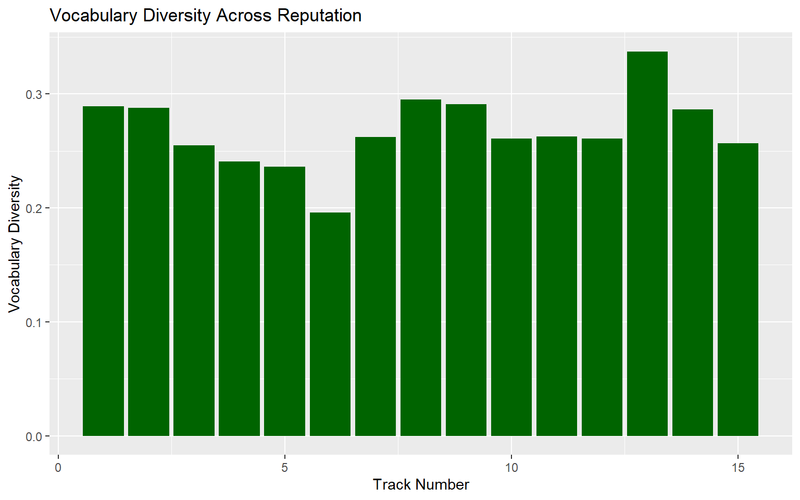

Avery Shaw
For this project, I am using the Corpus of Taylor Swift Lyrics, a dataset on GitHub containing lyrics from Taylor Swift’s studio albums and selected non-album songs. The dataset organizes lyrics by album, track, lyric line, and song structure, allowing individual words to be analyzed within their larger context.
I chose to focus on the lyrics from Taylor Swift’s Reputation album. Before the album was released in 2017, Swift faced significant public backlash in 2016 following a controversy with Kanye West over his song “Famous” and a phone conversation recording shared by Kim Kardashian. The controversy led to widespread criticism and the use of snake emojis to portray Swift as dishonest, damaging her public image. After maintaining a relatively approachable public persona, Swift stepped away from the spotlight before reemerging with a darker, more confrontational image. These experiences provide important context for her Reputation album, which explores betrayal, revenge, public perception, and finding love amid criticism. Music critics have noted that the album balances references to Swift’s public feuds with romantic and intimate themes (Nevins, 2017). This contrast makes it interesting to investigate how sentiment and language vary across the album.
As a “swiftie” myself, I chose this album because of the contrasting emotional undertones throughout its songs. Tracks such as “Look What You Made Me Do” and “I Did Something Bad” convey revenge and defiance, while songs such as “Gorgeous” and “King of My Heart” explore romantic feelings. The album also features a range of musical styles, from electronic synth-pop to softer, piano-driven ballads. When I think about this album, what comes to my mind is also the black and white color scheme portrayed in the album cover, which I associate with more negative sentiments compared to her previous colorful albums. These contrasts make Reputation an interesting subject for text analysis. In this project, I will investigate how language varies across different types of songs, how sentiment changes throughout the album, and which song is the most diverse in vocabulary.
Out of curiousity, I wanted to see what the most frequent words in Reputation, excluding stop words. This can give us a general idea of common themes in the album.


From these to figures above, we can see that the top three words are “made”, “call”, and “yeah”. Along with “made” and “call”, just from looking at these words I can recognize a handful in the top 20 that are simulataneously words within the track titles. Maybe it is worth looking at words that are not within the track titles or the choruses of the song (where track names typically appear).

We can see that the word “love” has the most appearances when filtering for only words in verses, and not choruses. Athough love appears the most, words like “drama” and “dark” also appear in the top 20. Now that we can see some polarity in the words used in this album, let’s see where these words could appear by looking at the sentiment trajectory of this album.
![This is a bar chart showing the the net sentiment of words in each track of Taylor Swift's Reputation album. On the x-axis is is the net sentiment, ranging from -16 to 30. On the y-axis are song titles listed, which are ordered by track number with track 1 '...Ready for It?' being at the bottom of the y-axis and track 15 'New Year's Day' being at the top of the y-axis. Net sentiments above 0 are bars colored in dark green, indicating positive net sentiment values. Net sentiments below 0 are bars colored in purple, indicating negative net sentiment values. The song 'Delicate' has the most positive net sentiment value at 30 and the song 'So it Goes...' has the most negative sentiment value at -16.](mini_proj_1_web_files/figure-html/unnamed-chunk-4-1.png)
The sentiment analysis shows that Reputation is not consistently negative, despite its darker public image and themes of revenge and betrayal. “Delicate” has the highest positive net sentiment, while “So It Goes…” has the most negative, suggesting that the album’s emotional tone varies across songs. Several songs also have positive net sentiment, demonstrating that the album balances darker themes with love and vulnerability. However, sentiment alone does not capture the complexity of a song’s lyrics, which leads me to question which song in Reputation is the most lyrically diverse.
To measure diversity in vocabulary, I will create a new variable, called vocabulary diversity, dividing the number of unique words in a song by all of the total words in a song. Songs with a higher proportion of unique words will have higher vocabulary diversity.
In a tibble, I will also calculate the repetition rate, which is 1 - vocabulary diversity. This tells us the proportion of words that are repeated in each song, with lower proportions representing less repetition.

# A tibble: 15 × 5
# Groups: track_number [15]
track_number title total_words unique_words repetition_rate
<dbl> <chr> <int> <int> <dbl>
1 13 This Is Why We Can't H… 415 140 0.663
2 8 Gorgeous 437 129 0.705
3 9 Getaway Car 546 159 0.709
4 1 ...Ready for It? 453 131 0.711
5 2 End Game 702 202 0.712
6 14 Call It What You Want 520 149 0.713
7 11 Dancing with Our Hands… 438 115 0.737
8 7 So It Goes... 389 102 0.738
9 12 Dress 491 128 0.739
10 10 King of My Heart 468 122 0.739
11 15 New Year's Day 366 94 0.743
12 3 I Did Something Bad 463 118 0.745
13 4 Don't Blame Me 482 116 0.759
14 5 Delicate 487 115 0.764
15 6 Look What You Made Me … 572 112 0.804It looks like Track 13, “This Is Why We Can’t Have Nice Things”, has the most diversity in vocabulary out of all the songs with lowest word repetition rate of 0.663.
We can also see that Track 6, “Look What You Made Me Do”, is the least lyrically complex out of all the songs, with the lowest proportion of unique vocabulary and, therefore, highest word repetition rate of 0.804.
The vocabulary analysis reveals that lyrical diversity varies across Reputation. “This Is Why We Can’t Have Nice Things” has the highest vocabulary diversity, while “Look What You Made Me Do” has the lowest and relies more heavily on repeated words. These differences suggest that Swift uses different approaches to songwriting throughout the album, ranging from varied vocabulary to repetition for emphasis and effect. Combined with the sentiment analysis and word frequency results, these findings demonstrate that Reputation contains a mix of emotional themes and lyrical patterns, rather than maintaining one consistent tone or writing style. Although vocabulary diversity provides insight into word choice and repetition, it does not fully measure lyrical complexity, which can also involve imagery, figurative language, and storytelling.
Taylor Swift’s Reputation demonstrates the contrast in emotional themes and songwriting styles that I initially expected to find throughout the album. The word frequency analysis revealed that “love” appears frequently in the verses, suggesting that romantic themes remain important alongside the album’s darker themes. The sentiment analysis further supported this contrast, with “Delicate” having the highest positive net sentiment and “So It Goes…” having the most negative. Finally, the vocabulary analysis showed that lyrical diversity varies across the album, with “This Is Why We Can’t Have Nice Things” having the highest vocabulary diversity and “Look What You Made Me Do” relying more heavily on repetition.
A limitation of this project are that there were some compound words such as “he-saids” and “she-saids” that Swift uses, which I left within this analysis. Even though the words are compounded, their meaning is different than if they were individual words so I decided to keep them as they were. Another limitation is that some positive and negative words are preceded by negations, which if I were to continue this analysis, I would dive deeper into sentiments taking that into account.
Nevins, J. (2017, November 10). Blue-eyed Brits and Kanye digs: Decoding Taylor Swift’s Reputation. The Guardian. https://www.theguardian.com/music/musicblog/2017/nov/10/blue-eyed-brits-and-kanye-digs-decoding-taylor-swifts-reputation